The main concerns
- Destination-scale ticketed entertainment, not a community facility: 18+ on its latest nights, with even the bars behind the ticket.
- Marketed nationally and internationally as a ticketed destination event, with visitors encouraged to come in costume.
- The masterplan put this kind of use by the O2 and station, not on a residential riverside.
- Up to 2,250 people would leave Secret Cinema and the Troubadour together in a single half hour.
- They would load onto a path barely 1.5 metres wide in places, shared with a two-way National Cycle Route, with no crowd safety assessment.
- The venues sit among homes, with a new residential tower rising about 25 metres from the cinema's facade.
- Amplified music and effects on a riverside so quiet the applicant's survey recorded birdsong, where the theatre's own acoustician already predicts a breach of the noise limit.
- They would also run late, the Troubadour's bar open to midnight or 1am, seven days a week.
- TfL says North Greenwich bus station is the fourth busiest in London and "no longer meets capacity requirements".
- It already serves a 20,000-seat O2 and 10,000-capacity Magazine London. The two new venues would add up to 4,500 more at capacity, close to the developer's own count of 6,000 residents, but the combined impact has not been assessed.
- Secret Cinema is marketed as a "new permanent home", and Troubadour as "semi-permanent", but both rely on temporary applications for up to ten years, on land planned for homes.
- Residents should be clear that "temporary" could still mean a decade of impact.
- The Peninsula has long been promoted through free, public culture, open to everyone without a ticket.
- Now the free fete is "paused" while two ticketed venues are presented as the Peninsula's "exciting new chapter".
What residents were not shown
The public-facing image is a glowing night-time arrival. The planning file shows what residents would actually live beside, day to day.
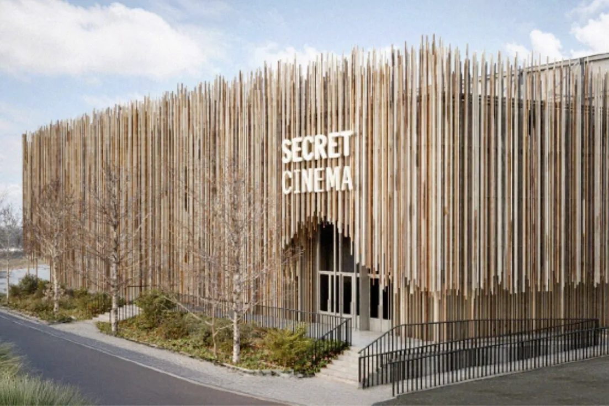
Both are the applicant's own renders, planning application 26/1247/F (Studio DJL). The glowing night view they lead with, and the side-by-side comparison, are in the evidence section below.
How residents use the riverside
This is not just a route to somewhere else. It is the Thames Path, a National Trail, and your everyday riverside: parkrun, dog walks, buggies, children on bikes, evening walks and quiet time by the water.
It can look wide in photos, but much of the width is a marked two-way cycle route, part of National Cycle Route 1, leaving only about 1.5 metres for walking in places. On an ordinary day, people may drift across the line and it hardly matters. With an event crowd, it does: a working two-way cycle route is not spare crowd space.
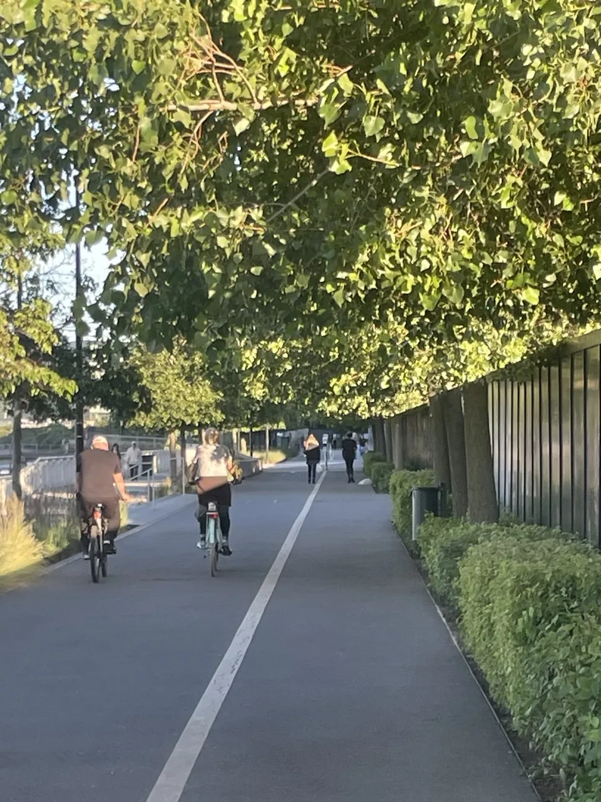
An ordinary evening on the path
People walking and cycling home along the river, under the trees.
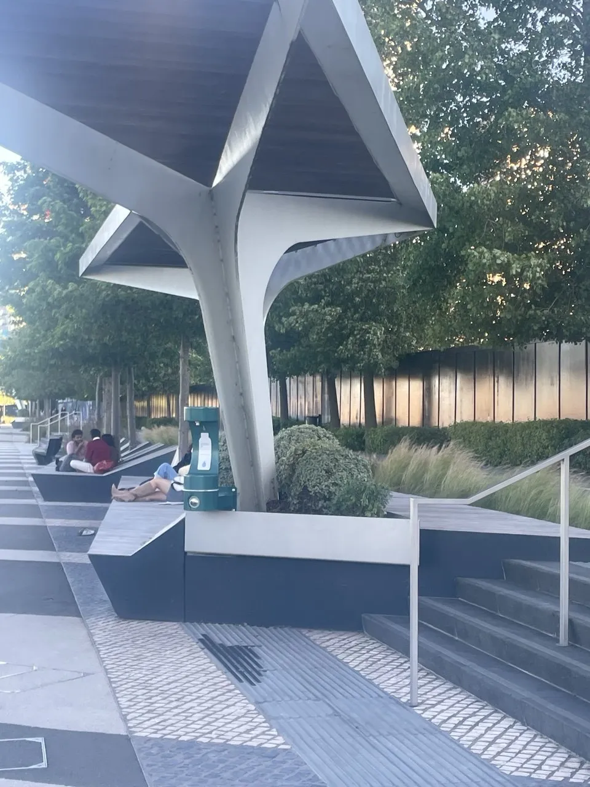
A place to sit, not a crowd corridor
A designed sitting terrace: canopied shelters, benches and loungers for rest by the water, not event dispersal.
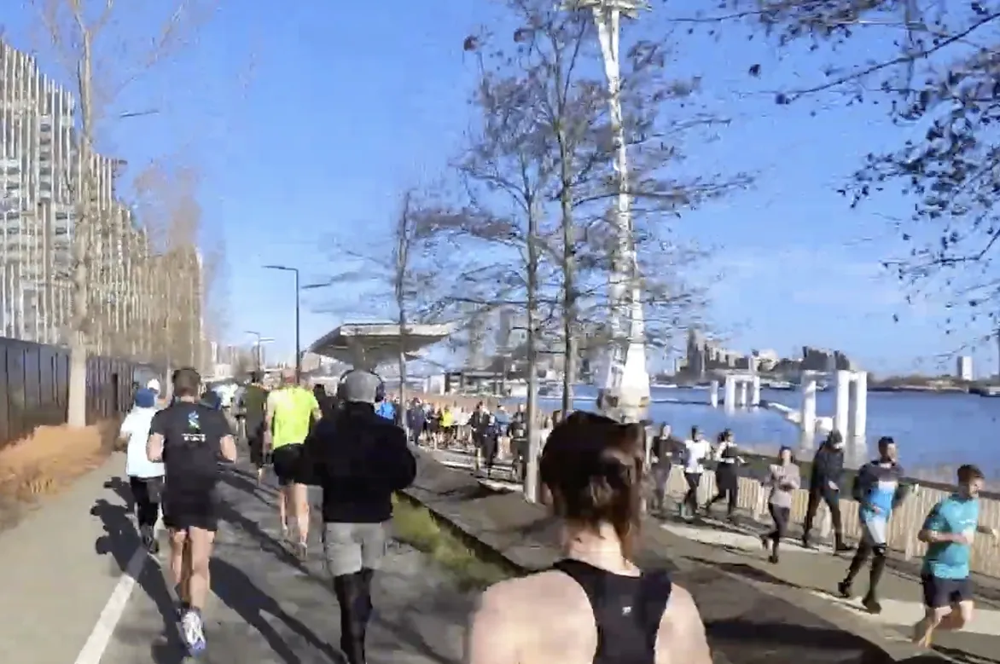
Even parkrun fills it
A normal Saturday parkrun already fills this stretch, and runners pass through quickly. The venues would send repeated ticketed event crowds onto the same narrow route.
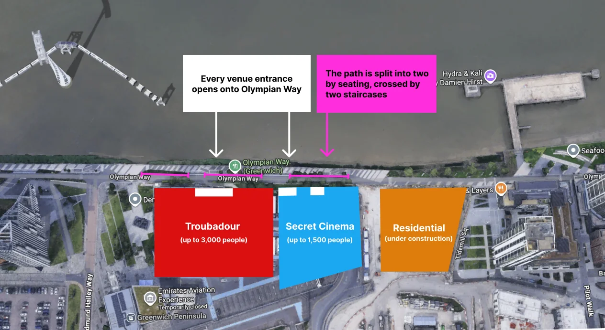
The applicant's own figures show up to 2,250 people leaving Secret Cinema and the Troubadour together in a single half hour. Without a proper pedestrian comfort and crowd safety assessment, the everyday riverside risks becoming the venues' forecourt day after day, rather than staying reliably usable for the people who live here.
Plot locations from the planning applications (Troubadour 25/3391/F, Secret Cinema 26/1247/F); entrances and access per the applicants' own Design and Access Statements and Venue Management Plans, which give access "solely via Olympian Way". Base aerial imagery: Google Maps.
The free, local culture the neighbourhood values
Free, local, drop-in events are a big part of what makes this a neighbourhood. They are the kind of culture many residents would like to see protected and supported. Several have closed, paused or disappeared in the last few years.
The Urban Village Fete
Ten years of a free neighbourhood event, now "paused" while the developer describes Troubadour and Secret Cinema as part of the Peninsula's "exciting new chapter".
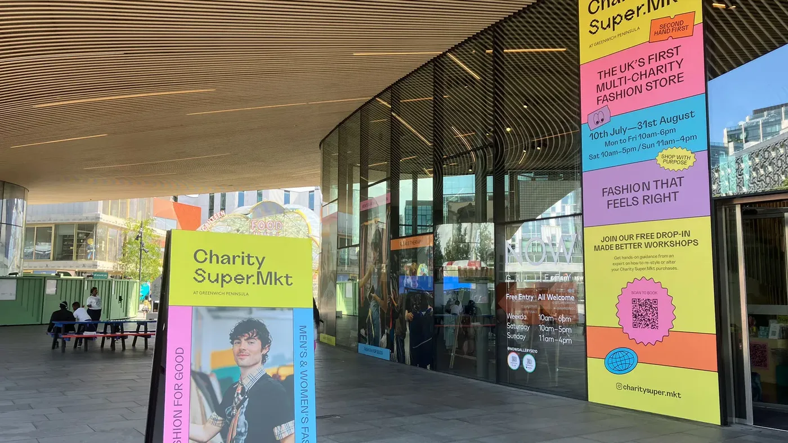
Gallery gone 2025NOW Gallery
A free public gallery and community space for eleven years, now consented as permanent retail, cafe and bar, with no gallery use kept.
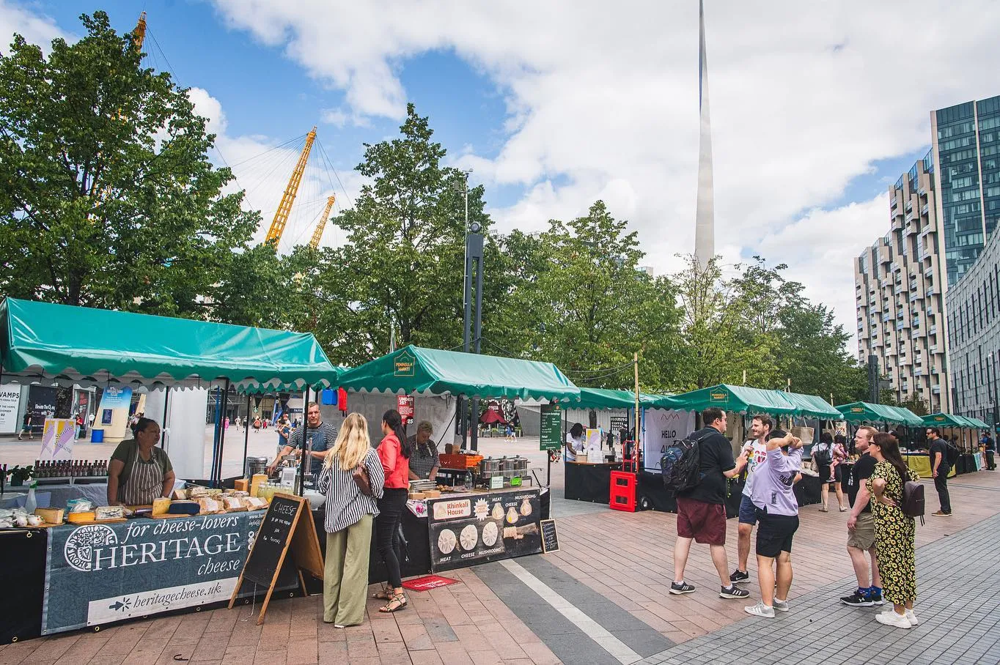
Gone since 2024The weekend market
A free weekend market on Peninsula Square for food, fresh produce, makers and craft. Its operator said it would return in 2025, but it has not returned.
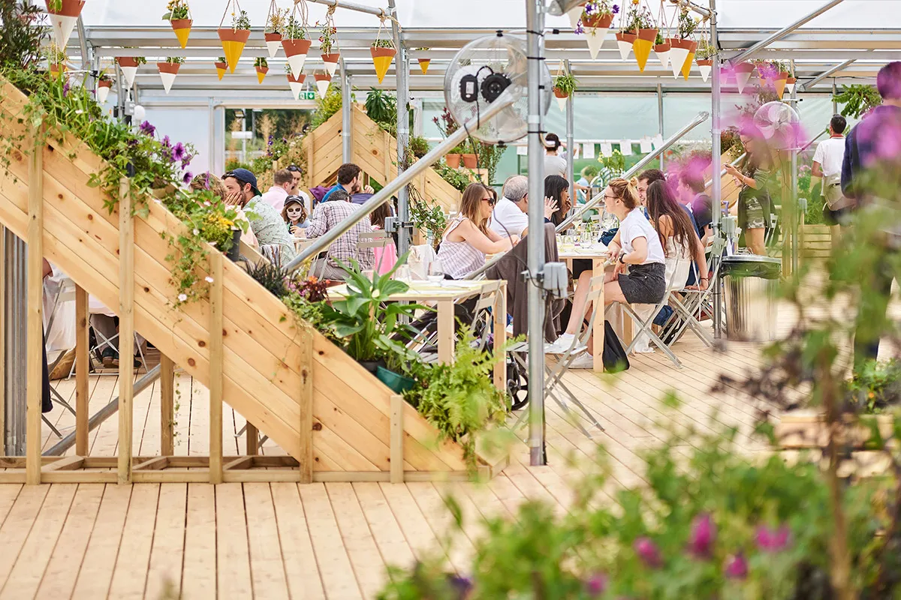
GoneFarmopolis
A floating garden on the Jetty, free to enter, made from rescued Chelsea Flower Show plants, with food, drink and events. Now closed, with nothing similar in its place.
These are the kinds of places and events residents can use without booking, paying or planning a night out: free, local, public, and part of everyday life here.
The Peninsula already has culture. The concern is the shift from free local amenities to ticketed destination venues, especially where the impact falls on the Thames Path, Olympian Way, nearby homes and everyday public spaces.
The developer says residents can enjoy Secret Cinema “right on their doorstep”. But the doorstep is the concern: the two venues could hold up to about 4,500 people at capacity, close to the developer's own count of 6,000 residents on the Peninsula.
NOW Gallery and the permanent commercial conversion: planning application 25/0474/F (granted 4 June 2025) and Greenwich Wire, August 2025. The Greenwich Peninsula weekend market (food, fresh produce, makers and craft, run by Real Food Festival): the market's own Instagram announced its final day before closing “for a few months” on 29 September 2024, and the operator's own website still says it is “closed for the winter… back in 2025”; as of 2026 it has not returned or posted further news. Farmopolis on the Jetty (Wayward and Secret Productions, RHS Chelsea 2016 reuse partner): a free-to-enter floating garden and cultural space with food, drink, performances and workshops; the Jetty continued as a free public garden (still described as a free floating garden in the developer's own 2020 visitor guide) and is now closed to the public. The developer's own placemaking consultant, Futurecity (2014, for Knight Dragon), describes the NOW Gallery and the Jetty as “meanwhile activation” cultural projects that helped establish the Peninsula's identity. Operator, developer and press records (market photo: Greenwich Peninsula Market's own Instagram, @greenwich_peninsula_market; Farmopolis photo: press). Each amenity closed for its own stated reasons and is cited here as a pattern of lost free and community amenity, not an allegation about any single closure. The 6,000-resident figure is the developer's own: a press statement by Laura Flanagan, Director, Greenwich Peninsula (“We can't wait to welcome new audiences to the Peninsula and see our existing neighbourhood of 6,000 residents enjoy this experience right on their doorstep”), reported by West End Theatre (“Troubadour gets go-ahead for two new London theatres in Greenwich”), and the applicant's pre-application public consultation, launched 23 March 2026, which sought feedback from “6,000 local residents living on the Peninsula”.
Comment on the application
The live application is Secret Cinema, 26/1247/F. The council expects to decide around 21 July 2026, and usually writes its recommendation before then, so comment now.
- 1Choose Object
- 2Write a few lines in your own words
- 3Add your name, email and address, and submit
This application could allow the venue to operate here for up to ten years.
What to ask for
You can ask the council to:
- refuse the application unless the missing crowd, transport, noise and cumulative impact assessments are provided
- carry out a site visit before deciding
- assess Secret Cinema, the Troubadour, The O2, Magazine London and other major Peninsula venues together
- require a proper crowd safety and pedestrian capacity assessment of Olympian Way / the Thames Path
- assess the impact on the cycle route, station, buses, taxis, pick-up/drop-off areas and local streets
- secure any mitigation by enforceable planning conditions, not voluntary or post-opening management plans
- refer the application to the public Planning Board, rather than deciding it under delegated powers
Also relevant: late-night noise, lighting and advertising, proximity to homes, the loss of public riverside amenity, and whether ticketed venues should count as community benefit while free public amenities shrink.
A starting point, make it your own
I object to application 26/1247/F.
I live on Greenwich Peninsula and use Olympian Way / the Thames Path. The applicant's own figures show up to 2,250 people leaving Secret Cinema and the Troubadour next door in a single half hour, onto a riverside route where the marked walking space is about 1.5 metres beside a two-way National Cycle Route.
There does not appear to be a proper pedestrian comfort or crowd safety assessment of that route. The combined effect of Secret Cinema, the Troubadour, The O2, Magazine London, North Greenwich station, buses, taxis, pick-up/drop-off areas and local streets also does not appear to have been assessed together.
The venues would sit close to existing homes and new homes under construction, run late into the night, and use land the masterplan set aside for homes. Please refuse the application unless these impacts are properly assessed first, or refer it to the public Planning Board with a site visit and proper cumulative assessment.
Change the wording so it sounds like you. Personal comments carry more weight.
Lead with the planning issues, not just the fete: crowd safety, cumulative transport, late-night noise, loss of amenity, and proximity to homes. Most of all, say how you use the riverside: walking, running, cycling, parkrun, dog walks, taking children out, or relying on the station and buses.
Your comment matters
The developer's own consultation drew 35 responses from around 6,000 residents contacted. Do not assume someone else has already raised the points that matter to you.
Email your Peninsula ward councillors
It also helps to email your ward councillors saying you have objected, and asking for the application to go to the public Planning Board with a site visit and proper cumulative assessment.
Want the evidence?
Everything above comes from the applicants' own planning documents, public sources, resident-facing material, and what is visible on these streets. Open any section below to see the detail.
What residents were shown, and what is in the planning file
The image used in posters, emails, the website and press coverage is the dramatic night render: Secret Cinema lit up on the riverside. The planning file gives a fuller view of the building residents would live beside, including the daytime frontage, the raised podium, the stairs, the long switchback ramp, railings, and the side and rear elevations.
This is not a small local screening. Secret Cinema is promoting a ten-week run of Disney's Pirates of the Caribbean, with tickets advertised from £49 per person and VIP packages up to £299. Tickets have been sold through national platforms including O2 Priority, Visa, TodayTix and Disney, and February dates have already sold out.
The venue's own material describes an immersive event with a live band, stunts, on-stage special effects, loud music and crowds. It would run Monday to Sunday, around eight shows a week (the days and number subject to change), with matinee and evening performances across the ten-week season. On the applicant's indicative evening timings, doors open about 6.15pm, the show runs to about 9.45pm, the bar takes last orders at 10.15pm and the audience is out by 11pm, while on some Thursday, Friday and Saturday nights a "Post-Show Event" keeps the site open later still. The Thursday to Saturday evening shows are recommended for over-18s, with under-16s not admitted, while other performances are recommended for over-12s, with under-7s not admitted. So arrival and departure peaks recur day after day, with audiences leaving late into the evening. The applicant treats this frequency as a point in its favour, arguing the audience is spread over "an (up to) seven day operational period each week", so it avoids the traffic and noise of a one-off festival or concert. For residents, that spread is the burden rather than the relief: the same peaks return most days, for ten weeks at a time, under a permission of up to ten years.
Food, drink and bar spaces are part of the ticketed experience, behind the entry price, rather than a new public place residents can use without buying a ticket. The venue's own visitor information gives the address as Olympian Way and sends visitors on the short walk to and from North Greenwich station, routing its audience onto the same path and transport network residents already use.
It is the same building in both renders. Click either image to compare them.
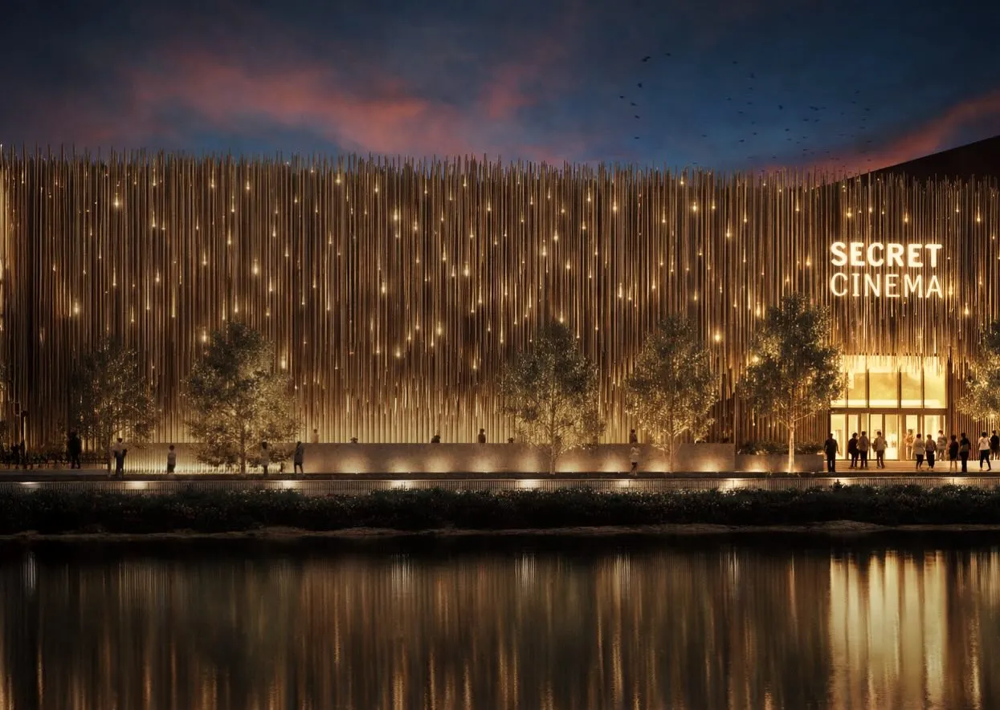
- Dramatic night lighting, with the facade glowing
- The raised entrance edge dressed as a solid wall
- Only a small number of people shown outside
- A flattering riverside angle, with the plainer side and rear elevations out of frame
- The same raised edge appears with plain railings
- The entrance is reached by stairs and a long switchback ramp
- The stairs, ramp and railings constrain how people arrive and leave
- The building sits close to the path, where crowds could bottleneck
The night render is the image used in resident-facing material and press coverage. The planning drawings show more of the everyday building, including side and rear elevations with banners, lighting and advertising panels.
Asked why the public CGIs did not show the full building, the developer replied:
The CGIs focus primarily on the arrival experience, rather than the full extent of the structure.
The developer, in writing
That matters because this is not just about how the building looks in a render. The applicant's own figures show up to 2,250 people leaving Secret Cinema and the Troubadour together in a single half hour. Those crowds would use Olympian Way / the Thames Path, where the walking space is about 1.5 metres in places beside a two-way cycle route.
These are the applicant's own renders, planning application 26/1247/F (Studio DJL), public: the glowing night view that reaches residents and the press, and the daylight elevation from the file. The rear elevation is shown earlier on the page. The developer's quoted words are from its own written response. The 2,250 half-hour egress figure is from the applicant's Transport Statement (i-Transport, April 2026). The "seven day operational period each week" framing is from the applicant's own statement within 26/1247/F. The Monday-to-Sunday operation, indicative show times, 11pm audience-out and the weekend "Post-Show Event" are from the applicant's Transport Statement (i-Transport, April 2026), section 4.4.
The Troubadour comparison
The operator points to its Canary Wharf theatre as evidence that this type of venue can work. That comparison is useful, but the setting is very different.
The Troubadour proposed beside Secret Cinema is the larger venue: two auditoria, up to 3,000 seats, with a fire-safety venue capacity of up to 3,500 once the public bar and restaurant are counted, nearly 25 metres tall, and open until midnight Sunday to Thursday and 1am on Friday and Saturday, seven days a week, with the public bar and restaurant open throughout (and later still under occasional Temporary Event Notices). It would use the same riverside route as Secret Cinema. It was resolved to be granted in January 2026, but is still awaiting a final decision while its Section 106 is completed.
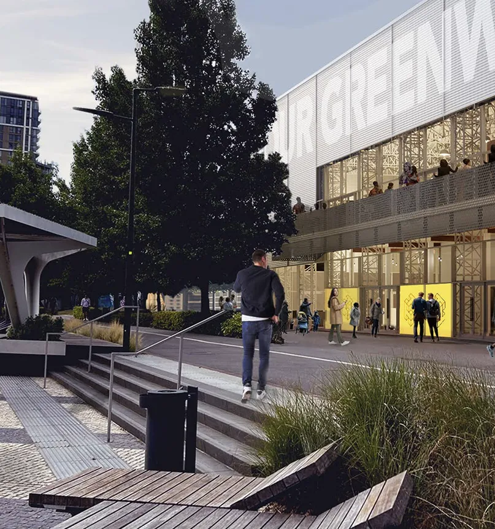
At Canary Wharf, people can gather outside the venue in a large public square. At Greenwich, the proposed audience would arrive and leave via Olympian Way / the Thames Path, beside National Cycle Route 1. The nearest open space is landscaped with sculpture, trees, benches and bollards, designed for sitting and slow movement rather than absorbing a large theatre crowd.
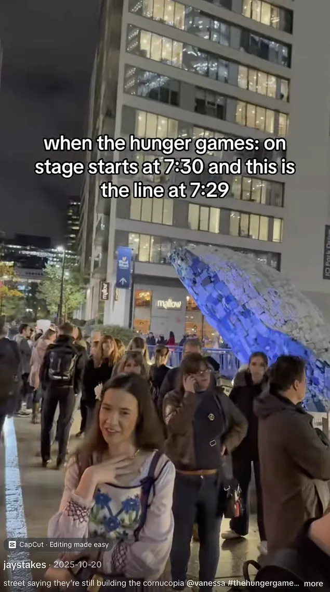
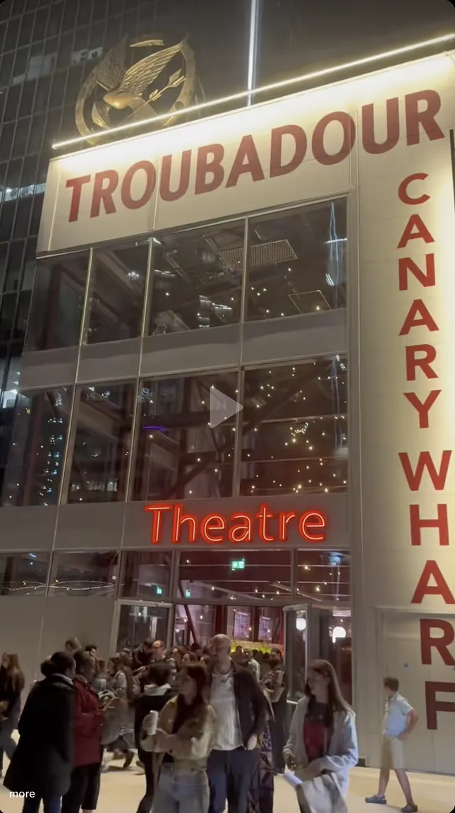
This is why the two venues need to be assessed together. The applicant's own figures show up to 2,250 people leaving Secret Cinema and the Troubadour together in a single half hour, using the same route. The issue is not whether a Troubadour venue can operate somewhere. It is whether this specific location has enough suitable space, safe routes and enforceable controls for the combined crowds. On enforceable controls, the Troubadour's own operational statement leaves crowd dispersal to each hirer's event safety plan and risk assessment, and treats staggering show times as something that "will be considered", with the two spaces hired out to different operators. That is mitigation by per-event management plan, not the secured, enforceable control this site needs, and the "coordination" the cumulative case relies on is not guaranteed.
Noise also needs to be assessed cumulatively. The riverside is quiet today, and the Troubadour's own acoustic assessment predicts exceedance of the council's noise limit at the neighbouring plot where Secret Cinema would sit. The planning officers' report treated that exceedance as acceptable partly because the worst-affected plot was still undeveloped, the very plot Secret Cinema now proposes to occupy. The applicant's noise document says those exceedance areas would only be assessed after construction, in its own words "in order to not place onerous noise control requirements on the scheme". That is before Secret Cinema's own crowd, music and effects are added.
Render: planning application 25/3391/F / Troubadour (public). Photos: the operator's Troubadour at Canary Wharf (the opening-night queue, @jaystakes; the crowd outside the entrance, @twotruthfultravel; both via TikTok). Canary Wharf capacity (about 1,200) and its opening problems, including the single-staircase exit crush and the access failures: reported by The Independent, MyLondon and theatre critic Liam O'Dell (all 21 October 2025), plus first-hand attendee reviews. (Canary Wharf is in Tower Hamlets, not Greenwich; cited only as the operator's own delivery record.) Consultation and jobs: Troubadour Statement of Community Involvement and Planning Statement (Firstplan, 9 October 2025), 30 of 35 responses "in support" and circa 65 FTE direct jobs against the "500" board headline (BBC News / Local Democracy Reporting Service, 3 February 2026). Resolved to be granted by the Council's Planning Board on 20 January 2026, subject to a Section 106 still not completed, so the application remains awaiting a decision. The officers' report found the most noise-affected areas were undeveloped plots and proposed a noise condition (reported by The Greenwich Wire, 13 January 2026). The applicant's noise impact assessment for 25/3391/F predicted exceedances in some areas to be assessed only after construction, "in order to not place onerous noise control requirements on the scheme" (reported 15 January 2026). Ten-year temporary use.
The path: 1.5 metres, and the crowd it must carry
The applicant's own figures show up to 2,250 people leaving Secret Cinema and the Troubadour together in a single half hour. They would leave onto Olympian Way / the Thames Path, where the marked walking space is about 1.5 metres in places beside a two-way cycle route.
There does not appear to be a proper pedestrian comfort or crowd safety assessment of whether that route can safely and comfortably carry those numbers. On TfL's own Pedestrian Comfort Guidance, that level of crowding would fall into the worst or near-worst comfort bands, depending on what width is assumed.
The Thames Path here is also the Peninsula's P5K route, a five-kilometre walking and running loop for the neighbourhood, conditioned to stay public "in perpetuity". It was planned as public realm and leisure space, not assessed as the main dispersal route for event crowds.
When the path itself went through planning, TfL and amenity groups asked about its capacity. The response was that a detailed assessment was not needed because it was "a leisure route, not the primary commuter route". That matters now, because the same route is being relied on for large venue crowds.
On the applicant's own drawings, the two-way cycle track takes about three metres. The walking strip beside it is about one and a half metres in places, and the route is part of National Cycle Route 1. A crowd would not only affect pedestrians. It would also affect cyclists using the route to pass through. The applicant's Transport Statement describes Olympian Way only as "an identified local cycle route", understating a marked two-way route, part of National Cycle Route 1, that runs directly past the venue entrance.
This is an amenity, not just a route. P5K Phase 2 was a landscaping scheme: a designed public leisure space for walking, running, cycling, sitting and relaxing by the water. A large event crowd bottlenecking onto the path and seating terrace risks turning that public amenity into the venues' forecourt.
It is also part of the Thames Path National Trail, protected by national, regional and local planning policy. If event crowds make it difficult or unsafe to use at peak times, that should be treated as a planning issue in its own right.
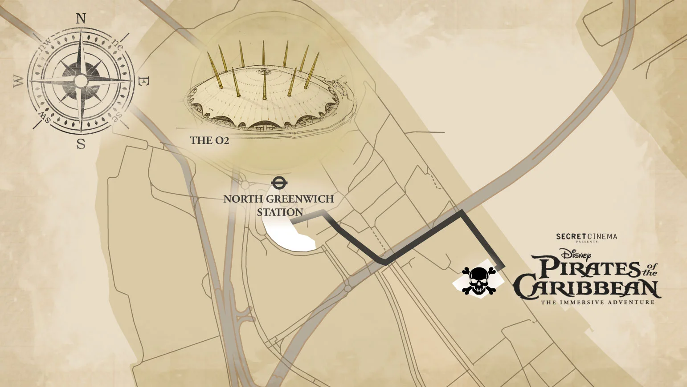
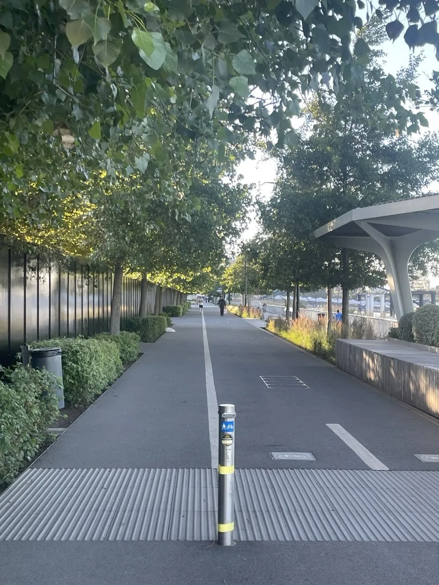
The developer says the path "will remain clear" and that a queuing plan will keep crowds off the cycle route. That is not the same as an assessment. The queuing it describes is for arrivals, held on the applicant's own land and justified by "the experience of the applicant" rather than a site-specific assessment. It says nothing about the 2,250 leaving at once, or whether the narrow walking strip can actually hold that crowd. Every visitor is also searched on entry, the Troubadour bag-searching all visitors at its single north gate and Secret Cinema's own information noting a security check on arrival, a per-person check at one path-side entrance that builds a queue at the very pinch point they say will stay clear.
The applicants do set out crowd management: stewards, signage, etiquette reminders, coordination with the Safety Advisory Group and London Underground, and security positioned "to avoid creating a bottleneck or blockage of the public highway" (their own words, conceding the risk). But managing behaviour is not the same as creating capacity: stewarding and signage can shape how a crowd moves, they cannot widen a 1.5-metre path or add trains and buses. These are operational promises for after approval, not a pre-decision assessment that the route and network can take the combined surge, and they are not secured by condition.
The applicant also describes the same route differently in other material. For the residential block now rising to the south, Olympian Way is described as "a public footpath" and "the pedestrian only pathway". Visitor guides promote this riverside as a place for "a leisurely stroll", "a quiet spot", "quiet time to yourself", traffic-free running and cycling, and "tranquil, green spaces". That is the everyday public character a large event crowd would affect.
The applicant calls the 2,250-person peak a worst case and says it is unlikely because the two operators will coordinate show times. But that coordination does not appear to be secured by condition. The two venues share the same developer and the same narrow corridor, and even the applicant's own worst case has not been properly tested against the space available.
Why the lower path does not solve it
There is a lower riverside path, but along the venue frontage it is a separate level, divided from the upper path by seating, loungers and planting, and crossed only at two staircases. It cannot simply be treated as overflow space for a large crowd leaving the venues.
Even if a more generous width than the marked 1.5-metre walking strip is assumed, the crowding still appears to fall into a very uncomfortable band under TfL guidance. The cycle lane is not crowd space, and the applicant does not appear to have assessed this properly.
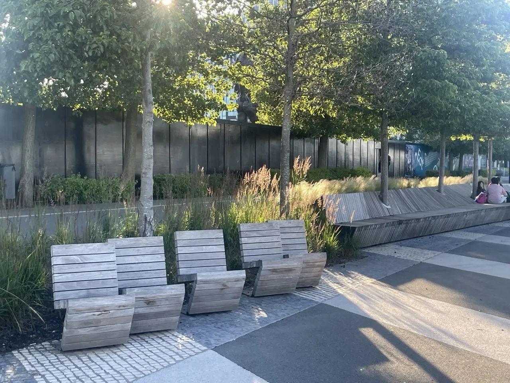
The route still comes back to Olympian Way
Some material refers to movement through the Design District, but the route to and from the venue still depends on Olympian Way. That is the narrow corridor beside the Thames Path and National Cycle Route 1, so it still needs a proper pedestrian comfort and crowd safety assessment.
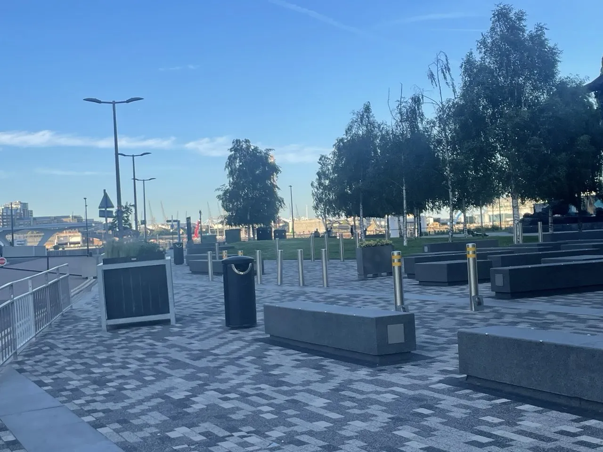
The central question is still the same: can up to 2,250 people leave the two venues in a single half hour using Olympian Way / the Thames Path, without blocking the pedestrian route, the cycle route, the lower riverside amenity or the public spaces residents use day to day?
The riverside route was delivered as the P5K Phase 2 route through reserved matters and related applications 16/4183/R, 17/3349/R and 18/0876/F. It was conditioned for pedestrians and cyclists "in perpetuity". In those files, TfL and amenity groups asked about usage and capacity. The response was that "no assessment was deemed necessary" because the route was "a leisure route, not the primary commuter route".
Secret Cinema's own Pirates of the Caribbean visitor map directs ticket-holders to walk from North Greenwich Station to the venue. The applicant's Design and Access Statement gives access "solely via Olympian Way". The route therefore relies on Olympian Way / the Thames Path, whether visitors are described as approaching via the Design District or otherwise.
Pedestrian comfort calculation: TfL's Pedestrian Comfort Guidance for London uses people per minute per metre. For a residential street, PCL D is "very uncomfortable" and PCL E is the worst band; D and E are not acceptable at peak. Applying the applicant's egress figure of about 2,250 people in half an hour, about 75 people per minute, gives about 50 people per minute per metre across a 1.5-metre footway, which is PCL E. Even using wider assumptions gives uncomfortable results: about 29 people per minute per metre at 2.6 metres, PCL D, and about 25 at 3 metres, still worse than the C+ peak floor. The segregated cycle lane has not been counted as footway.
The statement that the path will "remain clear" and the reference to a queuing plan come from the Secret Cinema Planning Statement, Montagu Evans, April 2026, para 4.12. The descriptions of Olympian Way as "a public footpath" and "the pedestrian only pathway" come from Knight Dragon's Design and Access Statement for the adjacent residential plot M0121, Chapman Taylor, May 2023, which also records 1,825 homes in Lower Riverside and 1,007 in Upper Riverside.
Greenwich Peninsula's own visitor guides describe this route and riverside as a place for "a leisurely stroll", "a quiet spot", "quiet time to yourself", traffic-free running, a cycling "safe haven", and "tranquil, green spaces" for "well-being". Sources: Greenwich Peninsula, "Out in the Open Air", 5 May 2024, and "Living in Greenwich Peninsula", 1 October 2024.
Path, Design District and riverside seating photos are residents' own. How crowds disperse beyond Olympian Way does not appear to be assessed in the application.
Thames Path status and policy context: the Greenwich Peninsula riverside forms part of the designated Thames Path National Trail, designated under the National Parks and Access to the Countryside Act 1949. Relevant policy includes NPPF, December 2024, para 105, which refers to protecting and enhancing public rights of way and access, including National Trails; Royal Borough of Greenwich Core Strategy, 2014, Policy IM4, which safeguards "the existing riverside and Thames paths"; and London Plan, 2021, Policy SI 16, which states that these paths will be public and not private spaces. National Trail status is cited here as a recognised planning consideration through these policies, not as a separate statutory consultation requirement or veto.
The station and streets are already under pressure
The same station, buses, taxis and local streets already carry major crowds from The O2 and Magazine London. The concern is that no realistic cumulative assessment has tested a busy day across all of these venues together.
After many O2 events, North Greenwich station and the bus station become very crowded for a significant period. Visitors regularly film and post queues and crowding after arena events.
That is the arena on its own, with capacity of around 20,000 people. It is not the only venue on the Peninsula, and the transport infrastructure is already under strain:
TfL describes North Greenwich as the fourth busiest bus station in London and says it "no longer meets capacity requirements". The new bus station intended to address this has not been built. The developer has also applied to push its delivery trigger from 3,000 to 6,000 occupied homes, under S106 variation 24/4133/I106, which has not yet been determined. Event crowds from these venues do not count toward either housing trigger.
Magazine London, also on the Peninsula, holds up to 10,000 people, and its own visitor advice tells people to arrive by Tube and bus. The applications do not appear to model a realistic peak case where The O2, Magazine London, Secret Cinema and the Troubadour all place pressure on the same station, bus interchange, taxis, drop-off points and local streets.
The O2 is also a year-round destination, not just an arena used on event nights. Its outlet, cinema and restaurants create daily visitor numbers, with The O2 as a whole recording over 10 million visitors in 2024. Those visitors already rely heavily on the same Tube and bus interchange.
The applicant argues the show times fall "outside" the typical O2 event timings, so the crowds will not coincide. But on its own figures, Secret Cinema's evening audience leaves between about 9.30pm and 11.30pm, overlapping the O2's typical 10.30pm finish and its post-show exodus, while the Troubadour stays open to midnight or 1am. On an O2 event night, all three would be dispersing across the same late-evening window onto the same station and streets, the cumulative case the applications do not test together.
Even the applicant's own "Cumulative Assessment" covers only Secret Cinema and the Troubadour, and on assumptions, since the Troubadour supplied no arrival or departure data. It does not add The O2 or Magazine London as concurrent loads; instead it argues the venues are "considerably lower than" the O2's capacity, which is a benchmark, not a combined assessment of a busy night across all of them.
There are also existing issues with cars, taxis, private hire and pick-up/drop-off activity on East Parkside, Edmund Halley Way and nearby residential streets. Some visitors already park around the retail park and walk in through the estate. The developer has tried to move pick-ups and drop-offs off the residential streets with a pick-up car park on Millennium Way, but has also acknowledged to residents that East Parkside remains an issue.
Further measures, including taxi geo-fencing and a possible physical barrier, are still unfinished or under consideration. Geo-fencing only reaches app-based taxis, not private cars or family pick-ups. If the venues are approved, pick-up/drop-off, taxi, parking and local street impacts should be assessed and secured by enforceable conditions before opening, not left to informal management after the venues are operating.
Crowd videos: @sophsconcertss, showing the bus station, and @miaomeew, showing the walk out, via TikTok after O2 events. These are included as examples of visible crowding after arena events, alongside the formal transport evidence.
Bus station capacity: TfL assessment describing North Greenwich as the fourth busiest bus station in London and stating that it "no longer meets capacity requirements". The proposed deferral of the new bus station delivery trigger from 3,000 to 6,000 occupied homes is S106 variation 24/4133/I106, applied for by the developer and not yet determined.
Magazine London: capacity and travel advice from Magazine London's own website, including up to 10,000 capacity across internal and external spaces, Showground capacity up to 7,000, public transport advice, and warnings that the Tube may be busier than usual on event days.
The O2: arena capacity of about 20,000 is cited in the applicant's Secret Cinema Transport Statement, i-Transport, April 2026. The O2's wider destination footfall, over 10 million visitors in 2024, up about 12% on 2023's 8.9 million, comes from The O2's own visitor announcements and retail trade press. The ICON Outlet is 210,000 sq ft with more than 60 brands and is included within the wider destination figure; no separate standalone figure has been found.
East Parkside pick-up/drop-off: the developer's 2026 response to residents describes a pick-up car park on Millennium Way and geo-fencing on taxi apps, while also stating that "there is still an issue on East Parkside". Geo-fencing covers app-based private hire only, not private cars or family pick-ups, and a physical barrier is described as only "being considered".
The point made on the page is that these existing pressures should be assessed cumulatively with the proposed venues. The applications do not appear to add The O2's wider daily destination footfall, Magazine London, O2 event peaks, taxis, pick-ups/drop-offs and the two new venues into one realistic worst-case assessment. The "outside the O2 timings" claim and the per-show arrival/departure profiles (about 750 departing in the peak half hour) are from the applicant's Transport Statement (i-Transport, April 2026), section 5.3, drawn from "consultant's estimates" of other sites. The two-venue cumulative assessment, its assumptions (the Troubadour supplied no arrival/departure data) and the O2 capacity benchmark are from the same Transport Statement, section 7.
The masterplan: this is housing land
These plots were planned for homes. The Peninsula's masterplan placed major destination uses closer to the station and The O2, while the Lower Riverside plots were zoned for housing.
In planning terms, a theatre or cinema of this kind is a "Sui Generis" use: destination entertainment, not a library, museum or community hall. The council's own description of Secret Cinema, 26/1247/F, describes the use as "Sui Generis". The applicant's own planning assessment goes further: against the policy test for new social infrastructure provision (accessible, affordable community services), it answers "not relevant", describing the scheme only as a "public facing use". So even the applicant does not present this, in planning terms, as social or community infrastructure, despite the "community benefit" framing in its public messaging.
Under the 2015 masterplan, the riverside plots, including 20.01 and 20.02 where the venues would go, were zoned for C3 housing. In the 2022 Development Specification, the Peninsula's theatre allocation was placed at the Transport Interchange, by The O2 and the Design District. The riverside plots where these venues would go were not included in that theatre allocation.
That distinction matters. A site beside the Tube, bus interchange and The O2 has better access to transport and more space for people to gather, queue and leave. A Lower Riverside site has homes nearby, a narrower public route, and a different public-realm role.
The Mayor of London's cultural infrastructure guidance also points to the need for venues to have suitable access, servicing, queuing and dispersal space, and recognises that queueing and crowd noise can affect neighbours. Those issues need to be tested against this specific site, not assumed from the general benefit of culture.
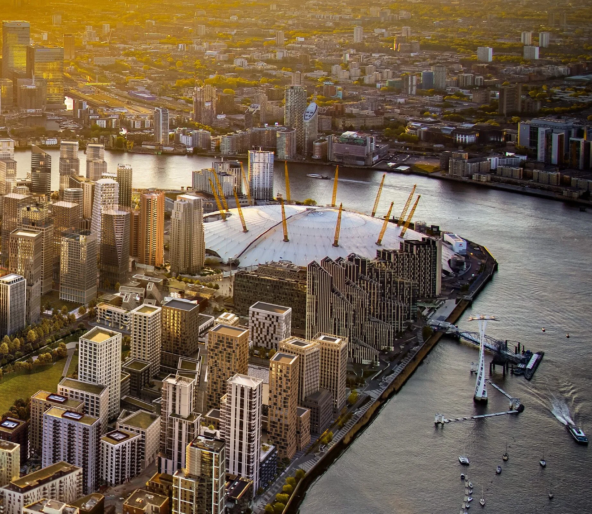
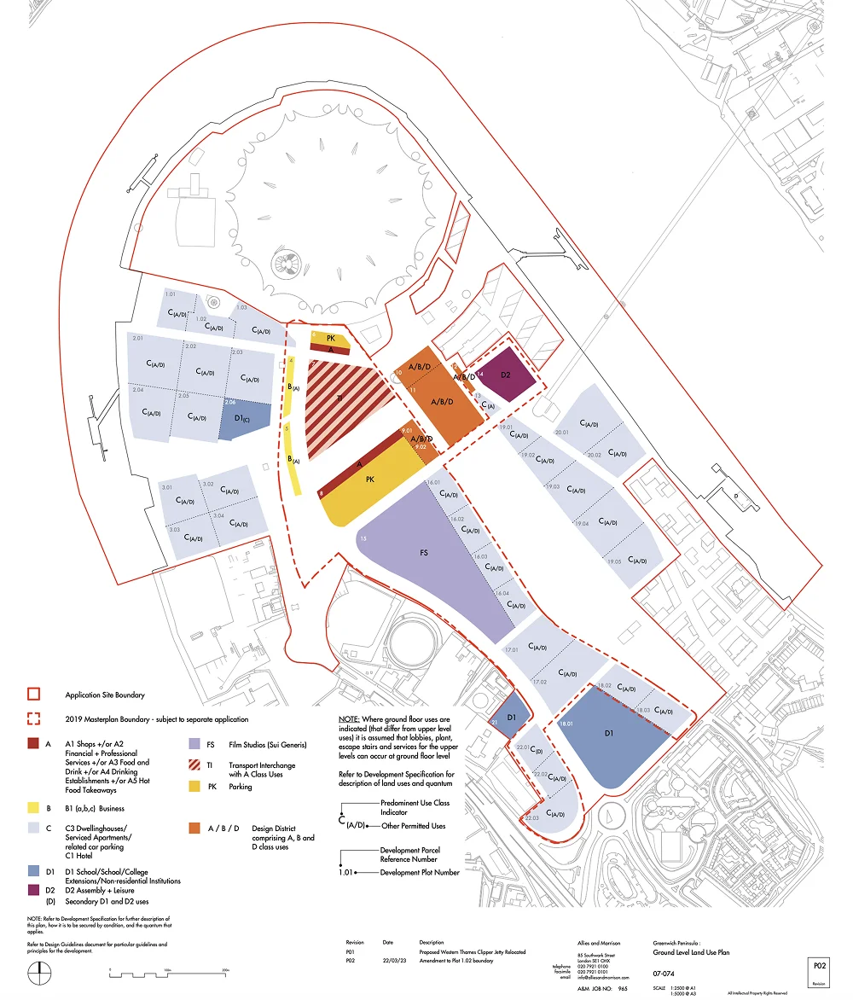
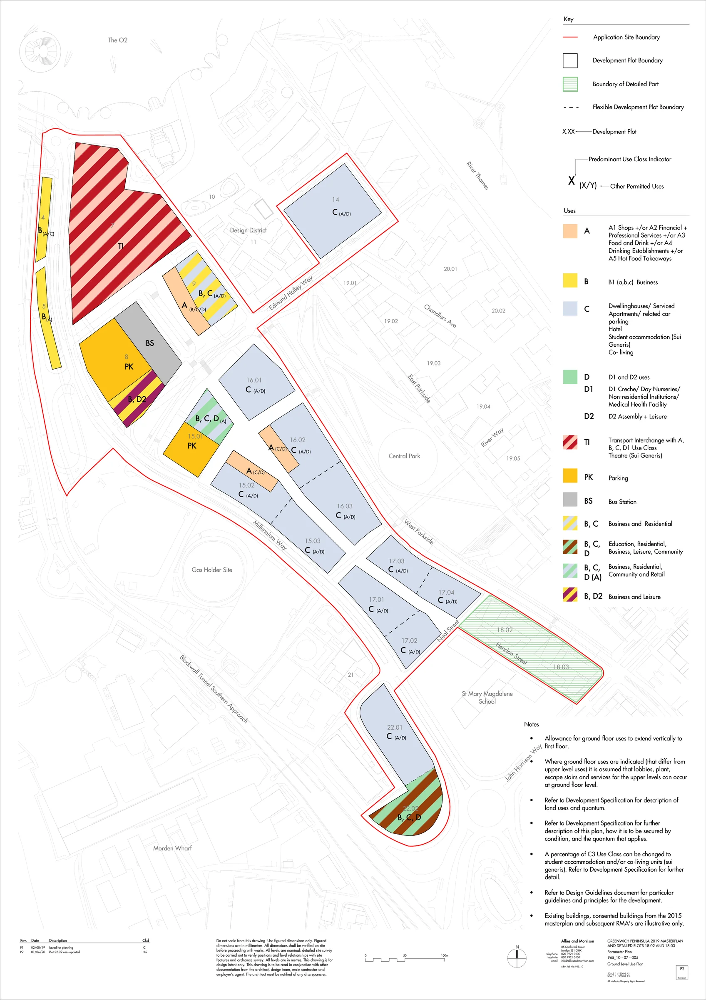
The point is not that the Peninsula can never have venues. Knight Dragon previously promoted theatre, cinema and performance uses at Peninsula Place, over the North Greenwich transport interchange, which it described as "the heart of it all". That is a different location from Lower Riverside, outside homes and opening onto Olympian Way / the Thames Path.
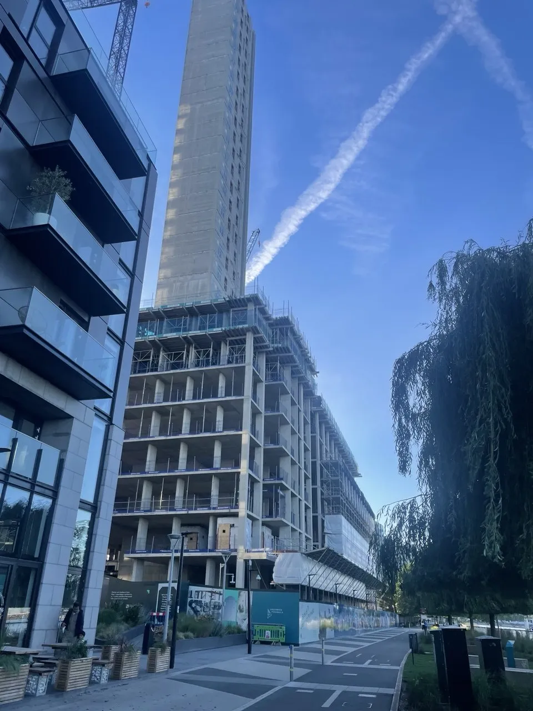
The temporary label also matters. These are not weekend pop-ups. The applications could allow commercial venues to operate here for up to ten years. A ten-year "meanwhile" use can still create long-term pressure on paths, streets, homes and services, even if it is not a permanent permission.
There is also a mismatch between the planning label and the public marketing. The planning applications rely on temporary permission, while Secret Cinema has been described as a "new permanent home", "new long-term home" and "flagship home", and Troubadour has been described to investors as "semi-permanent". Residents and councillors should be clear what is actually being approved: a temporary permission that could still last up to a decade.
Tower / homes: the tower under construction is a 300-home Lower Riverside plot, approved in 2014 and revised in 2023, with works reported as commenced in November 2025. A neighbouring plot of about 431 homes is already built. Photo: resident's own. Aerial riverfront render: developer's Peninsula Riverfront sales website for the Upper Riverside homes, a live marketing page still selling units.
Land-use plans: 2015 operative masterplan, Allies and Morrison Ground Level Land Use Plan, drawing 07-074 rev P02, zoning Plots 20.01 and 20.02 as Class C3 residential. 2022 masterplan revision, 19/2733/O, Revised Ground Level Use Plan, drawing 965_10-07-005, creating the Peninsula's only "up to 8,000sqm Theatre (Sui Generis)" allocation at the Transport Interchange and expressly excluding Plot 20.
Earlier interchange theatre/cinema proposals: Peninsula Place placed theatre, cinema and performance uses at the North Greenwich transport interchange, alongside a new Tube and bus station. Sources: Santiago Calatrava project page; Building Design report on the scheme being dropped from the masterplan; developer's Peninsula Place / Peninsula Central page, including the "heart of it all" wording.
Use class: both venues are Sui Generis under the Town and Country Planning (Use Classes) Order, with theatres and cinemas outside the standard use classes since September 2020. The council's portal description of Secret Cinema, 26/1247/F, describes the proposed use as "Sui Generis".
Cultural venue siting: Mayor of London, Cultural Facilities Design Toolkit / Designing Space for Culture, GLA, May 2022, including siting principles on central locations, access, servicing, queuing and dispersal.
Planning obligations / temporary use: Troubadour Planning Statement, Firstplan, 9 October 2025; Council Planning Obligations Guide SPD, 2015; 20 January 2026 resolution requiring a Section 106 covering transport, active travel, employment and training and sustainability. Troubadour claims CIL exemption as a temporary use. Secret Cinema obligations are not yet secured on the file.
Troubadour "semi-permanent" framing: public investor listing and Q&A for Troubadour Greenwich Peninsula Theatre, The RainMakers Collective, describing "semi-permanent, high-capacity venues" over a ten-year term and referring to disruption of "the traditional real estate and theatre models". Cited to characterise the proposed use and business model, not projected returns, which are not treated here as a planning consideration.
Peninsula cultural placemaking: Futurecity public project page for Knight Dragon's 2014 cultural placemaking strategy, including "cultural DNA" framing and "meanwhile activation" descriptions of NOW Gallery and the Jetty.
Secret Cinema "permanent" / "long-term" framing: Greenwich Peninsula website, Secret Cinema page, describing Secret Cinema's "new permanent home" and "new long-term home" while noting it is subject to planning permission; Secret Cinema Greenwich Peninsula page, "flagship home"; Secret Cinema LinkedIn announcement; press reports including Metro, Screen Daily and BroadwayWorld, March 2026; planning submission 26/1247/F, which describes "a new long-term location".
Camden precedent: Secret Cinema announced a "long-term" immersive flagship venue at 180 Arlington Road, a former Camden bingo hall, in November 2023, reported by The Stage, London Theatre and Camden New Journal. Camden Council approved the change of use to interactive entertainment with ancillary bar in January 2024. The operator then decided not to proceed and walked away by July 2024, before announcing Greenwich. Source for timeline: Immersive Rumours, January and July 2024. Cited only to show that the "permanent" / "long-term" label has previously been attached to an approved site and later dropped.
All sources cited here are public sources. The point is not that temporary permissions are unlawful or that venues can never be acceptable, but that the plots were planned for homes, the theatre allocation was elsewhere, and a "temporary" permission could still create up to a decade of impact.
The planning issues in brief
The issue is not whether Greenwich Peninsula can have culture, theatre or events. The issue is whether this specific site has been properly assessed before a decision is made.
The corridor does not appear to have been properly assessed.The applicant's Transport Statement models up to 2,250 people leaving Secret Cinema and the Troubadour in a single half hour, routed onto Olympian Way and the Thames Path. But it does not appear to include a pedestrian comfort assessment of that corridor, where the marked walking strip is about 1.5 metres beside a two-way cycle route. The Planning Statement says the path will "remain clear / unaffected", but that is an assurance, not an assessment.
This is housing land, with no venue allocation.Plot 20 is zoned residential under the operative 2015 masterplan. The Peninsula's only theatre allocation in the 2022 Development Specification is by the Transport Interchange, and expressly excludes this plot. Instead of amending the masterplan, the venues are being brought forward as separate temporary "meanwhile" permissions for up to ten years, even while Secret Cinema is marketed as a "new permanent home" and the Troubadour is marketed to investors as "semi-permanent".
The venues have been assessed separately.Two adjacent crowd-generating venues, from the same master developer, have been applied for separately. The concern is that neither application properly tests the other, or the realistic cumulative case with The O2, Magazine London, North Greenwich station, buses, taxis, drop-offs and local streets.
The noise case needs cumulative testing.Secret Cinema's noise survey was taken on a night with "no events at The O2", against a 43 to 45 dB baseline. The realistic worst case, both venues turning out while The O2 also empties, does not appear to have been modelled. The Troubadour's own acoustic assessment already predicts theatre noise exceeding the adopted limit at the Secret Cinema plot.
The supporting infrastructure is already under pressure.TfL's own assessment calls North Greenwich the fourth busiest bus station in London and says it "no longer meets capacity requirements". The replacement bus station has not been built. The developer has also applied to push its delivery trigger back from 3,000 to 6,000 occupied homes under S106 variation 24/4133/I106, which has not yet been determined. Event crowds generated by these venues do not count toward either dwelling trigger.
The path is a safeguarded National Trail.Olympian Way here forms part of the Thames Path National Trail. The council's adopted Core Strategy safeguards the existing riverside and Thames paths; London Plan Policy SI 16 requires public access along the waterway to be protected; and the NPPF requires development to protect and enhance public rights of way and access, including National Trails. Sending up to 2,250 people onto this route at peak, without a pedestrian comfort assessment, should be assessed against those policies before any decision is made. National Trail status is material through these policies, not a separate statutory veto.
These are requests for proper assessment before a decision, not objections to culture or theatre.